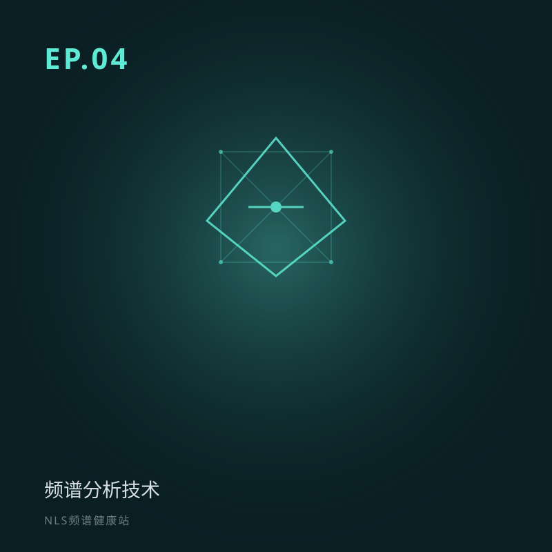

EP.04 频谱分析技术：如何「听懂」身体的频率
所属专题：技术原理：怎么读、怎么写
上期说到每个细胞都在用频率「说话」——可我们怎么「听懂」它？本期认识频谱分析技术：从棱镜分光到 NLS 的四种频谱视图，教你一眼看出身体是在「建设」还是「消耗」。
频谱分析技术详解：如何「听懂」身体的频率。从棱镜分光到 NLS 四种频谱视图（能量、平衡、熵、NLS），解释红蓝解离、扫描步骤与关键参数，并诚实讨论证据边界。关键词：频谱分析、非线性、平衡频谱、熵频谱。
分段要点
-
00:00开场：细胞在说话，怎么听懂？ 回顾上期，抛出本期核心问题。
-
03:00什么是频谱分析 收音机调频、三棱镜分光；为何必须「非线性」。
-
10:00NLS 如何做频谱分析 探测 → 反馈 → 比对 → 报告四步与关键参数。
-
18:00四种频谱视图（重点） 能量、平衡、熵、NLS 各看什么；红蓝解离。
#频谱分析#非线性#能量视图#平衡频谱#熵频谱
阅读完整文字稿（小乐 / 小思对话全文）